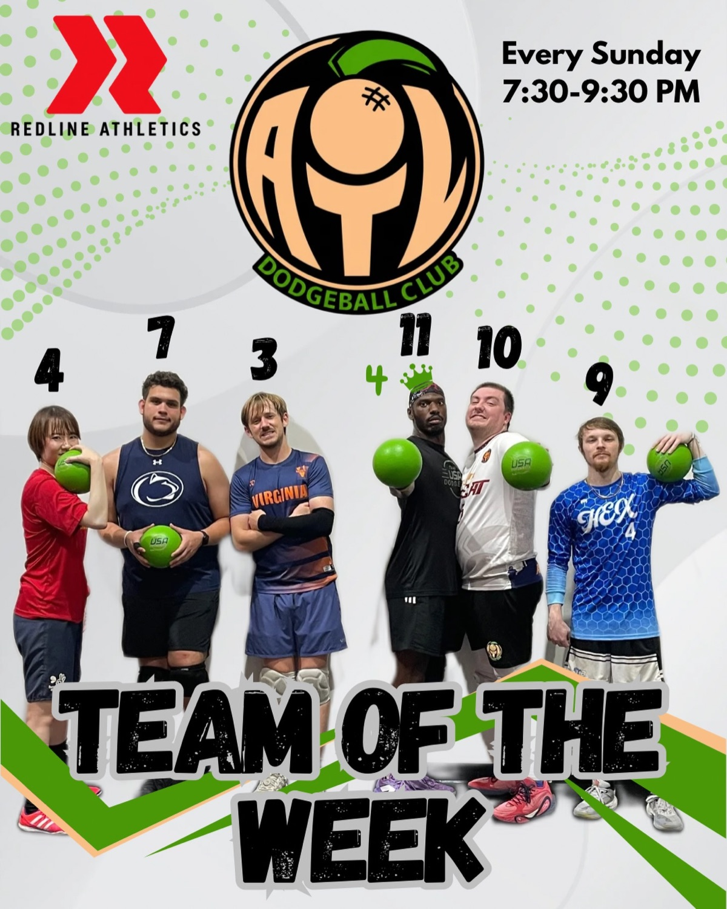
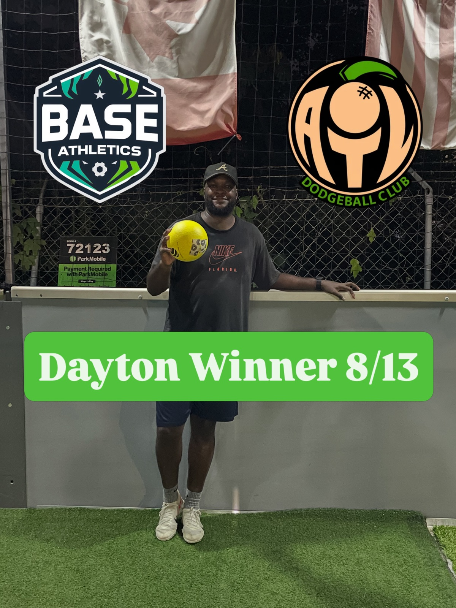
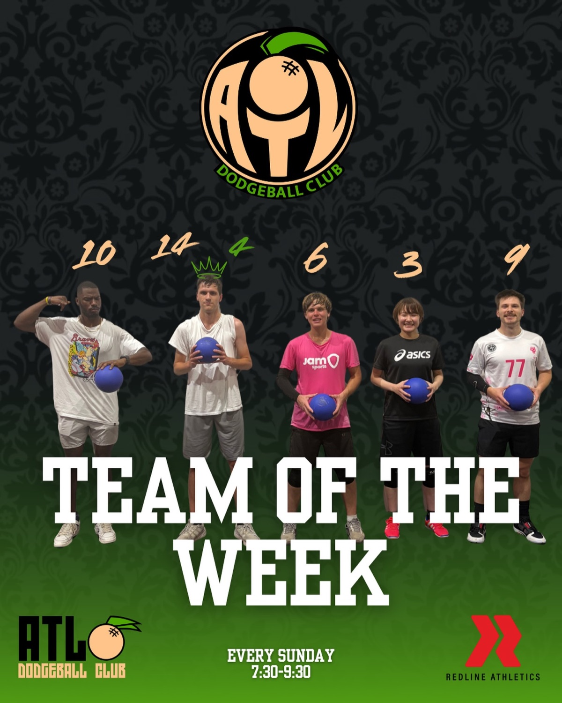
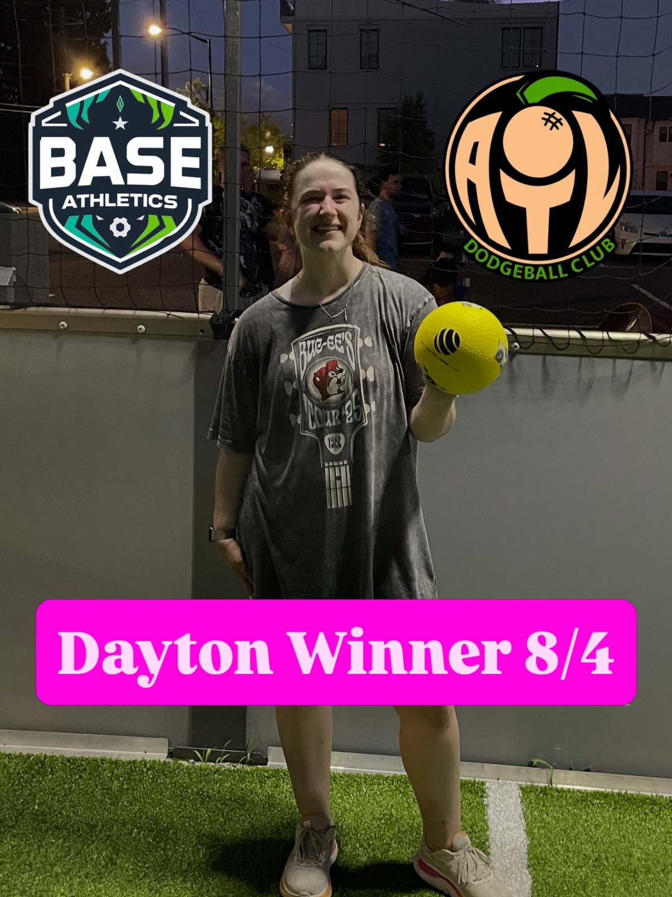
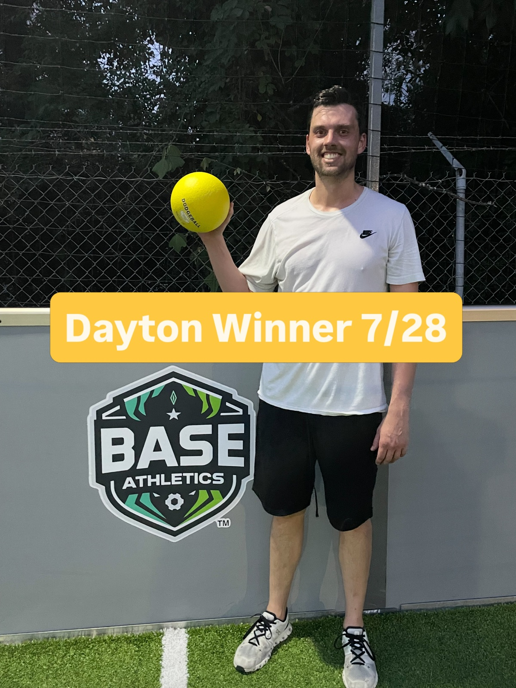
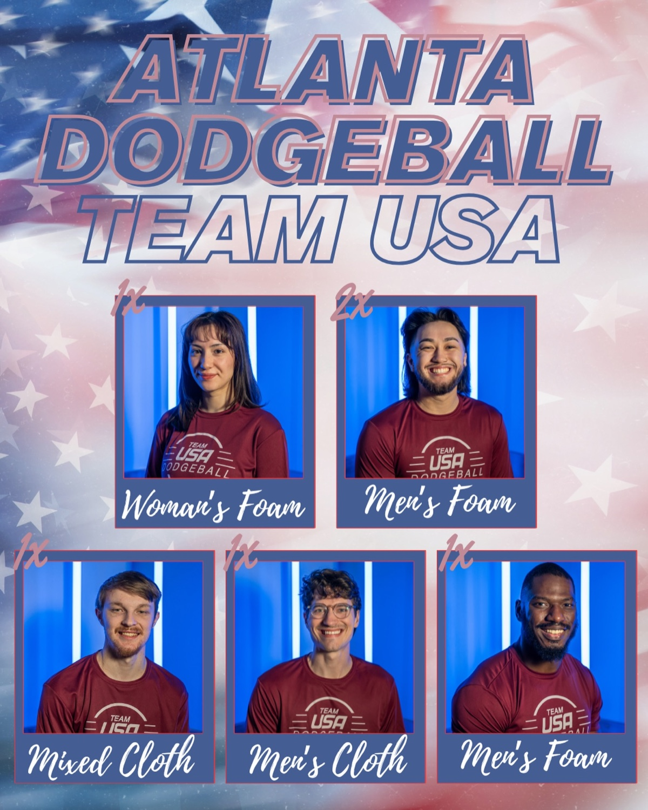

Raise the level.
Fast games, honest feedback, and athletes who want to get better together.
 Atlanta
AtlantaBuilt in Atlanta
Atlanta Dodgeball Club is where social players find the sport, competitive players raise their level, and everyone finds a team worth showing up for.
What drives us
Fast games, honest feedback, and athletes who want to get better together.
Multiple gyms and levels make room for first-timers, regulars, and traveling competitors.
From a first Team of the Week crown to a national roster, the club shares the moment.
The people
Real players. Real weekly wins. Photos from the club's Instagram community.






Atlanta → Team USA
Atlanta Dodgeball Club athletes have earned Team USA selections across foam and cloth formats. They carry the city's game onto the national stage—and bring that experience back to our weekly gyms.
Your first throw